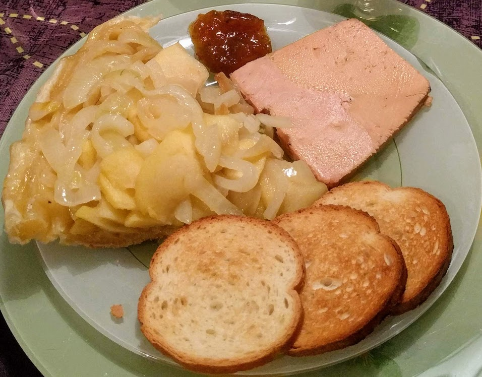

..@..♦.D.

|
Présentation 
|
Blog
|
Recettes
|

Ici avec du foie gras (cf. variante ci-dessous)
Pour 4 personnes (ou plus s'il on sert ça en entrée) :
Remarque : avec les quantités données, une pâte feuilletée, c'est trop, il va en rester un peu. On peut faire des jolis dessins avec le reste, par exemple.
Variante : pour rendre cette recette significantivement plus stylée, on peut couper un petit bloc de foie gras en tranches fines, les disposer sur le dessus de la pâte juste après la cuisson, et enfourner à nouveau pendant 3-4 minutes pour que ça fonde un peu.